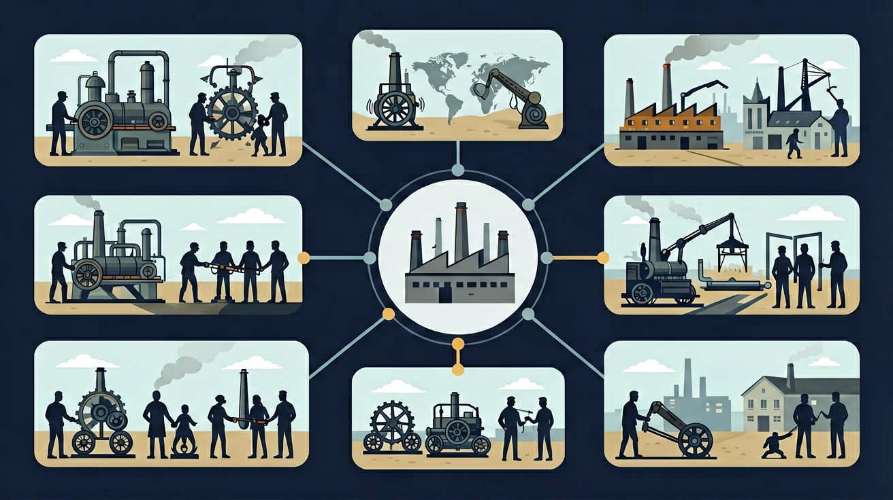
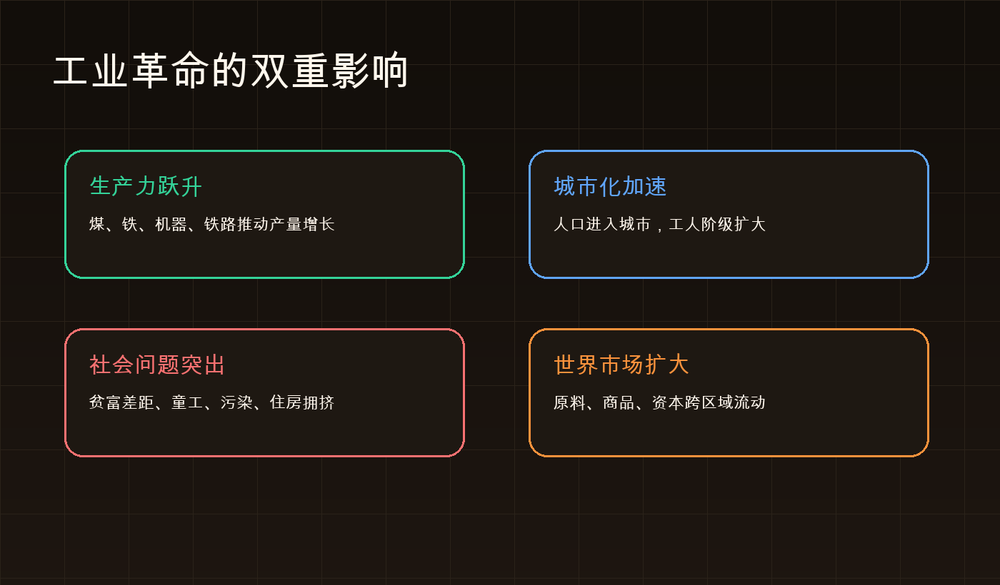
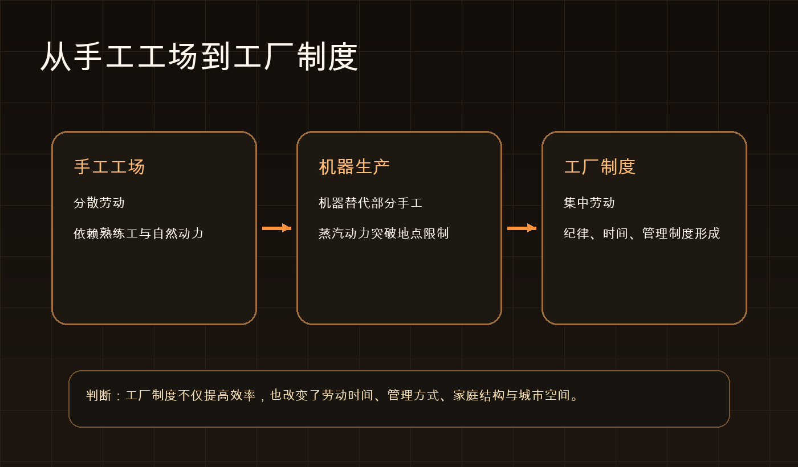

Interactive Canvas
互动：哪些条件会推动工厂扩散？
拖动四个条件，观察“工厂扩散指数”变化。工业革命不是单一发明，而是条件组合。
条件越完整，工厂扩散和产业集聚越明显。
工业革命不是几台机器的故事，而是技术、资本、劳动力、能源和市场共同重组社会的过程。

从英国发生条件出发，追踪技术突破、工厂制度、交通革命和世界市场扩展，最后评价社会影响。
选择后，后面的例子会围绕你的问题展开。
手工工场可以提高产量，但仍受熟练工、自然动力和分散劳动限制。蒸汽动力与机器生产结合后，生产被集中到工厂，时间、空间、劳动关系和市场都被重组。
如果只用一句话概括工业革命的起点，下列哪项最准确？
图层说明：橙色线表示工业技术和市场联系扩散路线，蓝色点表示典型工业中心。投影说明：本图使用等距圆柱投影，高纬地区面积有拉伸，仅用于定位扩散方向。
拖动四个条件，观察“工厂扩散指数”变化。工业革命不是单一发明，而是条件组合。
下列哪项最能体现工业革命的“社会结构变化”？


为什么说工厂制度是工业革命的重要标志？
工业革命推动世界市场形成的最直接机制是什么？
第一层是技术突破，第二层是生产组织变化，第三层是社会结构和世界联系重组。理解工业革命，要同时看机器、工厂和世界市场。
技术突破工厂制度城市化工人阶级世界市场
前置知识：资产阶级革命。后续知识：马克思主义与俄国革命、经济史与社会生活、科技史。